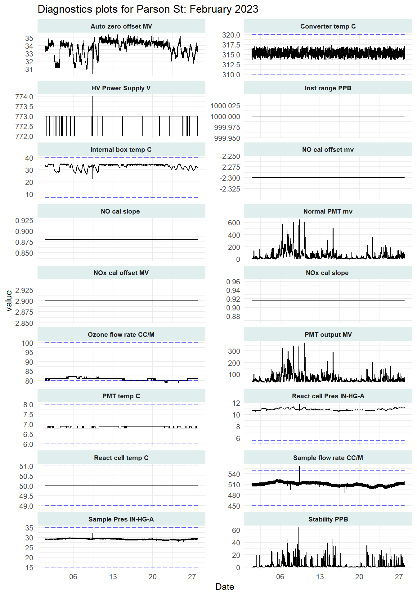
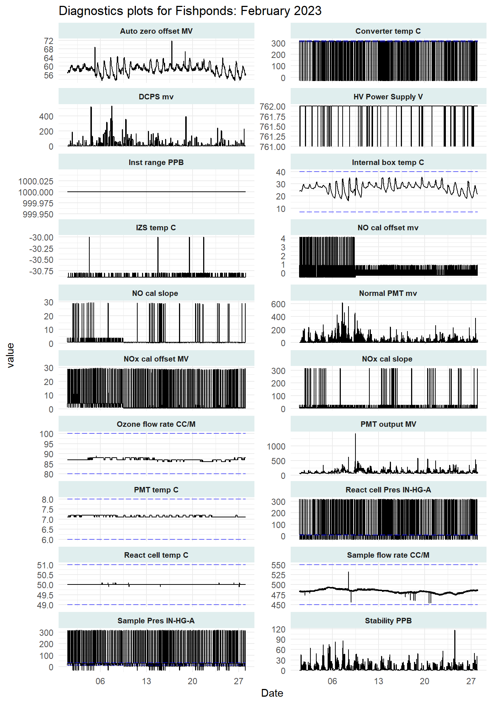
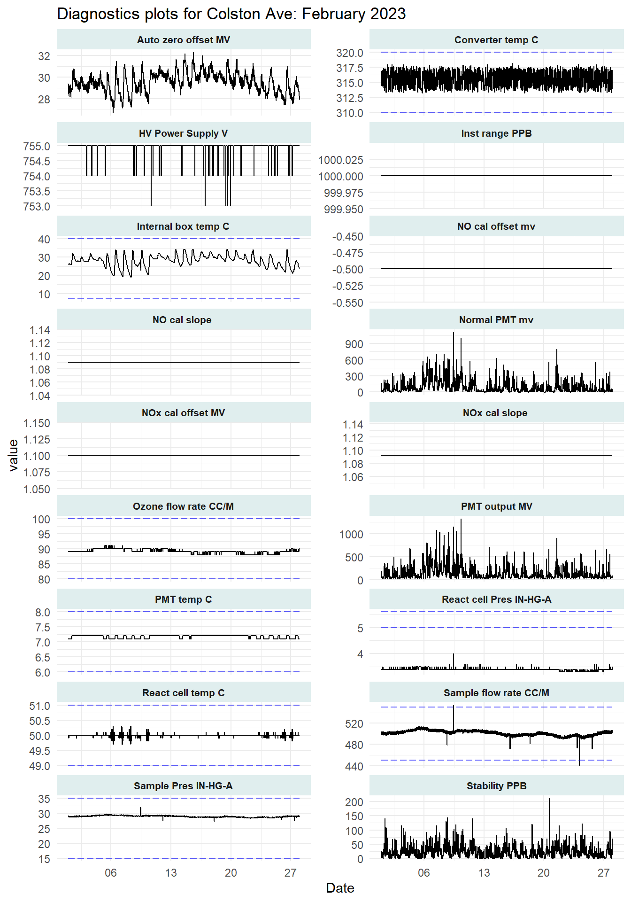
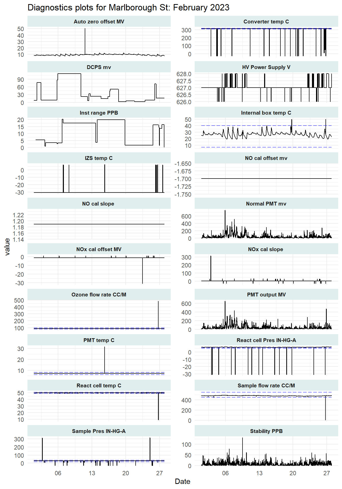

| Site | Pollutant | Number missing | Percent missing |
|---|---|---|---|
| Brislington | NO2 | 3 | 0.4 |
| Parson St | PM2.5 | 27 | 4.0 |
| Parson St | NO2 | 2 | 0.3 |
| Parson St | RH | 1 | 0.1 |
| Wells Road | NO2 | 2 | 0.3 |
| Fishponds | NO2 | 5 | 0.7 |
| Colston Ave | NO2 | 2 | 0.3 |
| Marlborough St | NO2 | 1 | 0.1 |
Air Quality Data: QA Report
Report for period: February 2023
Missing Data
This section summarises the quantum and percentage of missing hourly data from BCC’s continuous analysers for the period.
Calibration Factors
Zero calibration factors should be close to zero. When levels approach 2 or greater, this could indicate a leak in the sample line to the bottle or another problem.
Sensitivity calibration factors should be close to 1. Factors greater than 1.5 could indicate contamination of the gas bottle.
| NOx Calibration Factors Summary | |||||
| 2023-02-01 to 2023-02-28 | |||||
| Pollutant | Factor | Value | Target | ||
|---|---|---|---|---|---|
| Bristol Airport | 2023-02-07 | NOx | Zero | 0.53 | |
| 2023-02-07 | NOx | Sensitivity | 0.95 | ||
| 2023-02-07 | NO | Zero | 0.10 | ||
| 2023-02-07 | NO | Sensitivity | 0.95 | ||
| Wells Road | 2023-02-07 | NOx | Zero | 1.40 | |
| 2023-02-07 | NOx | Sensitivity | 1.01 | ||
| 2023-02-07 | NO | Zero | 0.50 | ||
| 2023-02-07 | NO | Sensitivity | 1.00 | ||
| Brislington | 2023-02-07 | NOx | Zero | 0.80 | |
| 2023-02-07 | NOx | Sensitivity | 1.03 | ||
| 2023-02-07 | NO | Zero | −0.30 | ||
| 2023-02-07 | NO | Sensitivity | 1.03 | ||
| Fishponds | 2023-02-08 | NOx | Zero | −1.60 | |
| 2023-02-08 | NOx | Sensitivity | 1.61 | ||
| 2023-02-08 | NO | Zero | 0.10 | ||
| 2023-02-08 | NO | Sensitivity | 1.67 | ||
| Parson Street | 2023-02-09 | NOx | Zero | 0.40 | |
| 2023-02-09 | NOx | Sensitivity | 1.52 | ||
| 2023-02-09 | NO | Zero | 1.13 | ||
| 2023-02-09 | NO | Sensitivity | 1.55 | ||
| Colston Avenue | 2023-02-09 | NOx | Zero | 0.30 | |
| 2023-02-09 | NOx | Sensitivity | 0.71 | ||
| 2023-02-09 | NO | Zero | −0.20 | ||
| 2023-02-09 | NO | Sensitivity | 0.71 | ||
| Marlborough Street | 2023-02-09 | NOx | Zero | 2.00 | |
| 2023-02-09 | NOx | Sensitivity | 0.99 | ||
| 2023-02-09 | NO | Zero | 0.70 | ||
| 2023-02-09 | NO | Sensitivity | 0.99 | ||
Span Divergence
Span readings should be similar for NOx and NO. The stated value for NOx and NO on the trace gas is usually within 1 - 2 ppb of each other. High variance in span calibration readings can indicate a contaminated cylinder.
If no line is plotted it is likely that only one calibration was done in the period selected.
[1] "Twice monthly calibration data does not exist to make span plot"Telemetry: Data Allowance Used
The Teltonika routers use multi - network SIMs that are capped at 3GB per month. Allowances are shared over all SIMs and refresh on the first day of each month. Six sites operated by BCC have EnviDAS data loggers running Windows 10. Windows updates and other downloads related to the loggers consume the majority of the data. Updates are often run at the end of the month so high data use is normal to see here.
Warning: Removed 1 rows containing missing values (`position_stack()`).
Cumulative Data Use
Warning: Removed 26 rows containing missing values (`geom_line()`).
Instrument Diagnostics
The NOx analysers used by BCC log diagnostics data for the internal components of the instruments. These data can be useful to track performance of the devices and identify maintenance needs.





